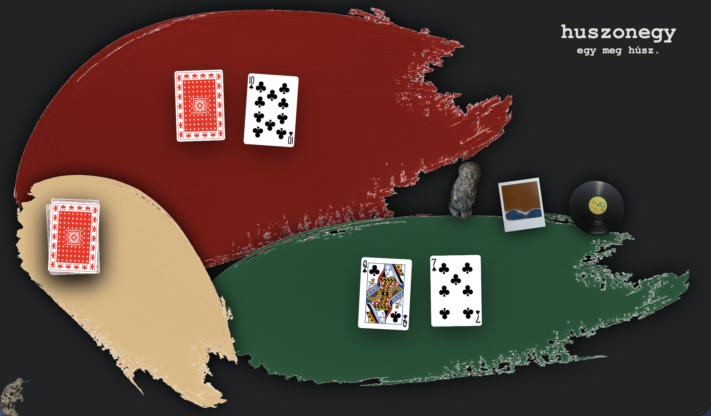

Hungarian black-jack game for browser designed and implemented by me using semantic HTML,
CSS for unique styling, and JavaScript DOM manipulation for game mechanics.
Using pngs from objects in my life (Pink Floyd vinyl, polaroid, figure) I tried to add some creative personal touch to
the game design while keeping the mechanics clear and somewhat intuitive.
There are two decks to choose from in the info page (can be accessed from the bottom left thinker button)
along with a general explenation of the game mechanics in Hungarian
Just press on the pic on the left/top to start playing!
github repository
This is a semester project we had in the first semester of my studies at VIA University College
as part of the Software Technology Engineering course.
It is a Java-based system for keeping track of the activities and points in the made-up eco-village of Cloverville
encompassing villager handling and the management of trade offers, shared tasks, green activities and green goals.
The layout was built with SceneBuilder in JavaFX using an FXML file along with a controller class and using CSS for styling.
A website was also created to display the village's info and current state of activities using semantic HTML, JavaScript, and CSS,
moreover, JSON parsing and fetching is used to get real time data from the desktop application.
Also, since it was done in an academic context, a whole of 90 pages of reports were written to document the project, the development process, and the final product.
This project not only taught me the fundamentals of software engineering and using frameworks and methodologies to work in a structured manner
and experience teamwork in a collaborative environment but also how an entire app can be developed from scratch based on just a few ideas and requirements
meanwhile having fun in the cration process.
github repository
cloverville website

I made this JavaScript and HTML project while following this tutorial,
later expanding it through trial, error, and research.
The simulation uses a simple neural network to train self-driving cars that improve through mutation — you can adjust the mutation rate, number of neurons, lanes, and traffic density.
These core mechanics, along with the raycasting and segment-intersection logic for car sensors, were implemented by me.
Each change resets the best-performing car, which can also be saved or deleted manually.
And for fun, you can even drive a car yourself using WASD controls.
Just press on the pic on the left/top to check it out!
github repository

This is a simple weather app I made for IOS using Swift in Xcode.
It fetches real-time weather data from the OpenWeatherMap API based on user-inputted city names, user's location, based my hometown,
or a pre-selected 20 randomized cities around the globa.
The app displays the current temperature, weather conditions, and an icon representing the weather
as well as forecasts for the upcoming week (this is a different OpenWeatherMap API).
The user interface is built with UIKit, featuring a clean layout with a text field for city input,
and 3 other buttons for the above-mentioned options, and labels to display the results.
Error handling is included to manage network and API issues, providing user feedback through alerts.
Overall, this project helped me learn how to work with APIs, handle JSON data,
and create a responsive UI in Apple's development platform - XCode and it's languae - Swift.
Functionality:
🌍 random weather of 20 cities
🏙️ weather in Debrecen (my hometown)
📍 weather in user’s location
🔍 weather of searched city
+ includes forecasts
github repository

These are some of the C# projects I worked on throughout last year while preparing for my matura exams.
They started out as programming exercises meant to strengthen my understanding of C# syntax and basic algorithms,
but gradually became small explorations of logic, recursion, and mathematical thinking.
I used these projects to experiment with console input/output, loops, functions, and different ways of approaching the same problem —
from simple number operations to recursive algorithms and convergence tests.
Running these projects on macOS was a bit trickier — Visual Studio Code for Mac doesn’t handle console apps directly,
so I learned to use Bash and the .NET CLI to build and execute them in the terminal.
This gave me hands-on experience with environment setup and command-line workflows on macOS as well.
github repository